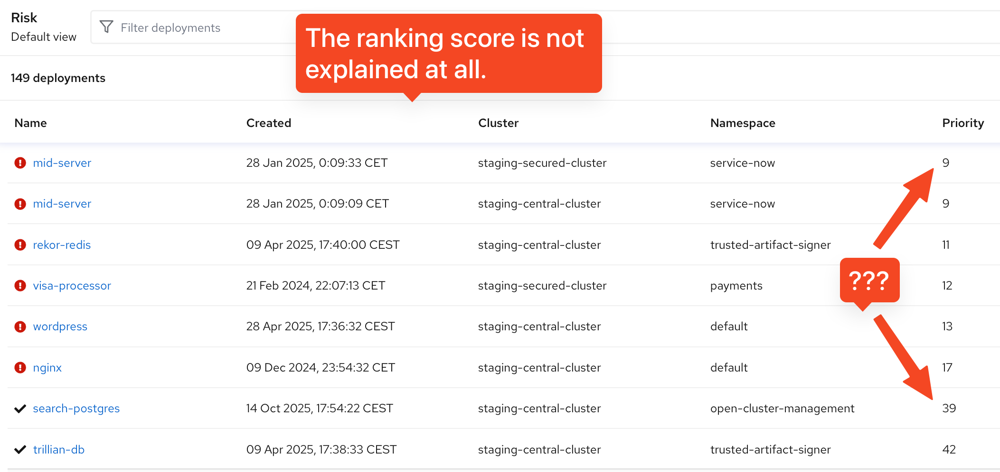
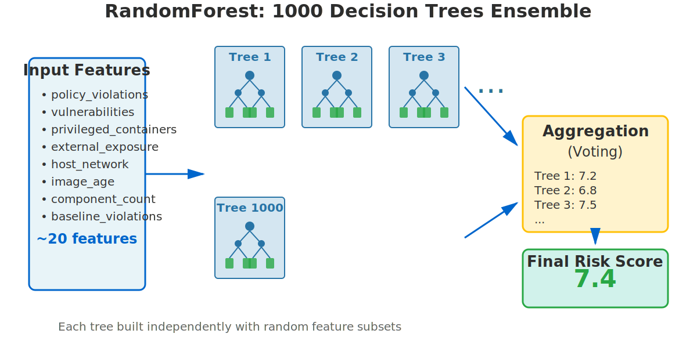
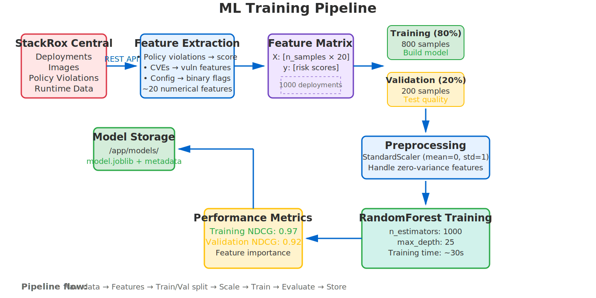

Machine learning based ranking for risk
Intelligent risk recommendations for ACS
Stephan Heßelmann
2025-11-05
Agenda
- The Challenge: Why we need machine learning for risk ranking
- The Algorithm: How a random forest works
- Training Pipeline: From Central data to trained model
- Predictions: How to rank deployments in production
- Vibe Coding: Current prototype status
The Challenge
What Is Risk?
- ACS monitors thousands of deployments across customer clusters
- Each deployment has dozens of security characteristics:
- Policy violations
- CVE vulnerabilities
- Privileged containers
- Network exposure
- Process anomalies
- … and many more
- Question: Which deployments should security teams focus on first?
The Existing Risk Feature
Current risk assessment in ACS
Shortcomings of Current Approach
- 🔒 Intransparent
- The risk score is baked into ACS with a complex formula.
- Customers cannot understand or validate how scores are calculated.
- ⚙️ Inflexible
- Does not adapt to customer needs or emerging trends.
- One-size-fits-all approach across all environments.
Current Approach: Rule-Based Multipliers
Feature multiplication:
Risk Score =
Policy Violations ×
Process Baseline ×
Vulnerabilities ×
Risky Components ×
Component Count ×
Image Age ×
...Drawbacks:
- Hardcoded formulas
- Manually tuned thresholds and weights
- Cannot reverse the calculation
- Multiplied scores lose individual feature information
Example: Image Age Calculation
// Creates a score that is:
// A) No risk when daysSinceCreated is < penalizeDaysFloor
if imageAgeInDays < penalizeDaysFloor {
return
}
// B) Increases linearly between penalizeDaysFloor and penalizeDaysCeil
daysSincePenalized := imageAgeInDays - penalizeDaysFloor
scaledDays := float32(daysSincePenalized) / float32(penalizeDaysCeil-penalizeDaysFloor)
riskScore = float32(1) + float32(scaledDays*(maxMultiplier-1))
// C) Is 1.5 when duration is > penalizeDaysCeil
if riskScore > maxMultiplier {
riskScore = maxMultiplier
}The Machine Learning Solution
- Learn from real or synthetic training data.
- Identify which security features matter most.
- Rank deployments by learned feature weights.
- Explain what features contribute to high risk scores.
- Improve continuously as new data arrives.
The Algorithm
Random Forest: The Committee Approach
Analogy: Assessing fire risks for a house.
- Instead of 1 inspector with a rigid checklist…
- … ask 1000 inspectors.
- Each inspector looks at different factors:
- Electrical wiring + smoke detectors
- Flammable materials + escape routes
- Building age + maintenance history
- Final assessment = average of all 1000 opinions
Random Forest Architecture
Why Random Forest?
- ✅ Robust against outliers
- If one tree makes a mistake, 999 others can correct it.
- ✅ Handles complexity
- Learns non-linear relationships automatically.
- ✅ Provides Explanations
- Feature importance: which security issues matter most.
- ✅ Simple Training
- No epochs, no backpropagation, no GPUs required.
Why not Random Forest?
- ❌ Just a regression algorithm
- No actual AI. Not in the training data -> won’t be learned.
- ❌ Supervised learning
- Predictions are only as good the training input. Feature engineering matters.
- ❌ Retraining
- Learning new things requires new training data + model retraining.
Example: One Decision Tree
Is vulnerability_score > 7.5?
├─ YES → Is privileged_container_ratio > 0.5?
│ ├─ YES → Risk Score = 8.2
│ └─ NO → Is external_exposure = 1?
│ ├─ YES → Risk Score = 6.5
│ └─ NO → Risk Score = 4.1
└─ NO → Is policy_violation_score > 3.0?
├─ YES → Risk Score = 5.0
└─ NO → Risk Score = 2.3Final Prediction: Average of 1000s such trees
Training Pipeline
End-to-End Training Flow
Predictions
Prediction Flow

Feature Importance: What Matters?
Example: Top 5 most important features
1. policy_violation_score 28.5%
2. max_vulnerability_score 19.8%
3. privileged_container_ratio 15.2%
4. external_exposure 8.9%
5. process_baseline_violations 7.6%- Insight: Policy violations and critical CVEs drive risk ranking more than other factors.
- Detail: Calculated for training data and each prediction.
Performance Metric: NDCG
NDCG = Normalized Discounted Cumulative Gain
- Measures ranking quality on 0-1 scale
- 1.0: perfect ranking, 0.0: worst ranking
Example:
True ranking: [1, 2, 3, 4, 5, 6, 7, 8, 9, 10]
Model ranking: [1, 2, 3, 4, 5, 6, 7, 9, 8, 10]
↑ Small error at bottom
NDCG ≈ 0.98 (98% as good as perfect ranking)Typical Performance
Training Metrics
- NDCG: 0.75-0.95
- Training time: ~60 sec
Model Characteristics
- Feature count: ~20
- Training samples: 100-1000
- Model size: ~20 MB
- Trees: 1000
Validation NDCG > 0.75 means model ranks deployments reasonably well!
Vibe Coding
Current Prototype
🤖 Model
- Training pipeline with Central integration
- Feature extraction for deployments + images
- RandomForest model with versioning
- Validation with NDCG tracking
📦 Deployment
- Python container with FastAPI REST service
- Model persistence to local/remote storage
Questions?
Future Improvements
- Fine-tune different models and improve feature extraction.
- Use LLMs to generate advanced training data.
- Implement back propagation of user driven risk decisions.
- Integrate prototype with ACS UI.
Resources
- Code:
stackrox/ml-risk-service - Docs:
learning.md(comprehensive technical guide)
ACS Engineering | Frankfurt meetup 2025